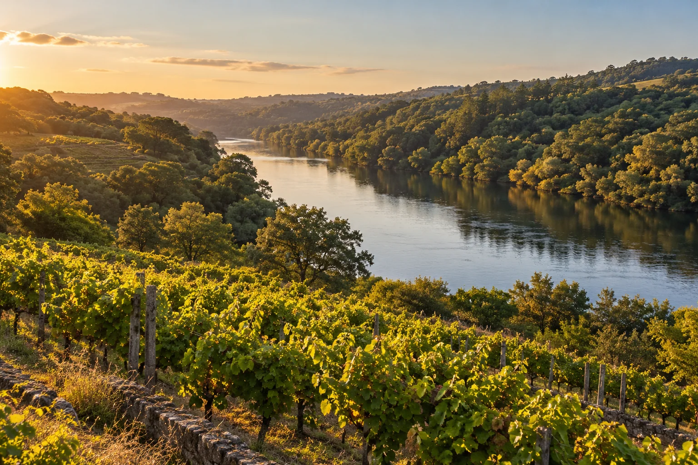

Adega Amalia Diéguez Martínez
O Pazo – Chaos · A Arnoia, Ourense
In O Ribeiro, wine begins long before it reaches the glass. It is in the vines that slope towards the Miño, the paths between plots and even the house where you will sleep: La Cruceira was a winery before it became a country house.

Vines have shaped this landscape for centuries. In the Middle Ages, monasteries such as San Clodio encouraged their cultivation, and Ribeiro wine eventually reached other European markets. Today, discover that tradition in A Arnoia by talking to the people who tend the vines and make the wine.
Contact each winery before travelling to ask about tours, tastings or buying wine.
O Pazo – Chaos · A Arnoia, Ourense
Ponte s/n · A Arnoia, Ourense
Winegrower: 640 376 007
Sales: 607 410 086
www.eloilorenzo.es
A Laxa · A Arnoia, Ourense
Os Chaos · A Arnoia, Ourense
A Laxa · A Arnoia, Ourense
Ponte · A Arnoia, Ourense
A Laxa · A Arnoia, Ourense
Remuiño · A Arnoia, Ourense